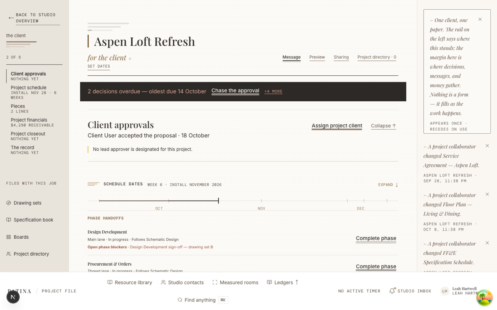

From the portal: serif headings that feel printed; paper with a warm cast; small, precise date labels; restrained oak details; an unmistakable next action.
From Common Ground: a generous left-hand project portrait, a human note from the designer, and a continuous record that makes the next handoff easy to understand.
Document paperWarm stockCharcoal inkPatina forestDepth comes from paper value, photographic scale, and a fine binding edge.
Current reference: repository QA capture dated October 20, checked against the current designer-portal style tokens. It is a visual reference, not a new live production capture.